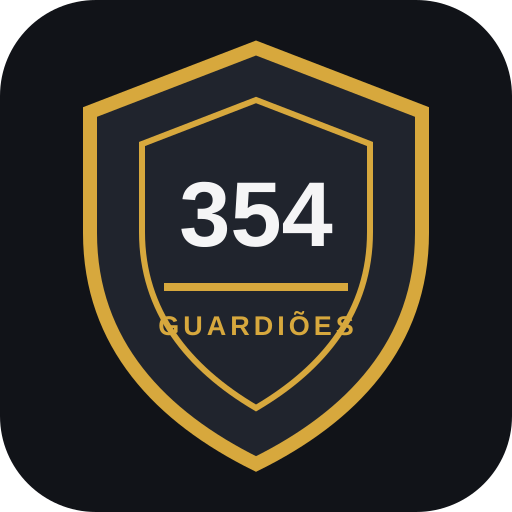

Acesso exclusivo
Entrada individual para membros autorizados.

O espaço dos membros dos Guardiões da 354 para acompanhar passeios, eventos e comunicados do motoclube.
Entrada individual para membros autorizados.
Agenda do motoclube com informações e detalhes dos encontros.
Área para avisos e, futuramente, notificações no celular.